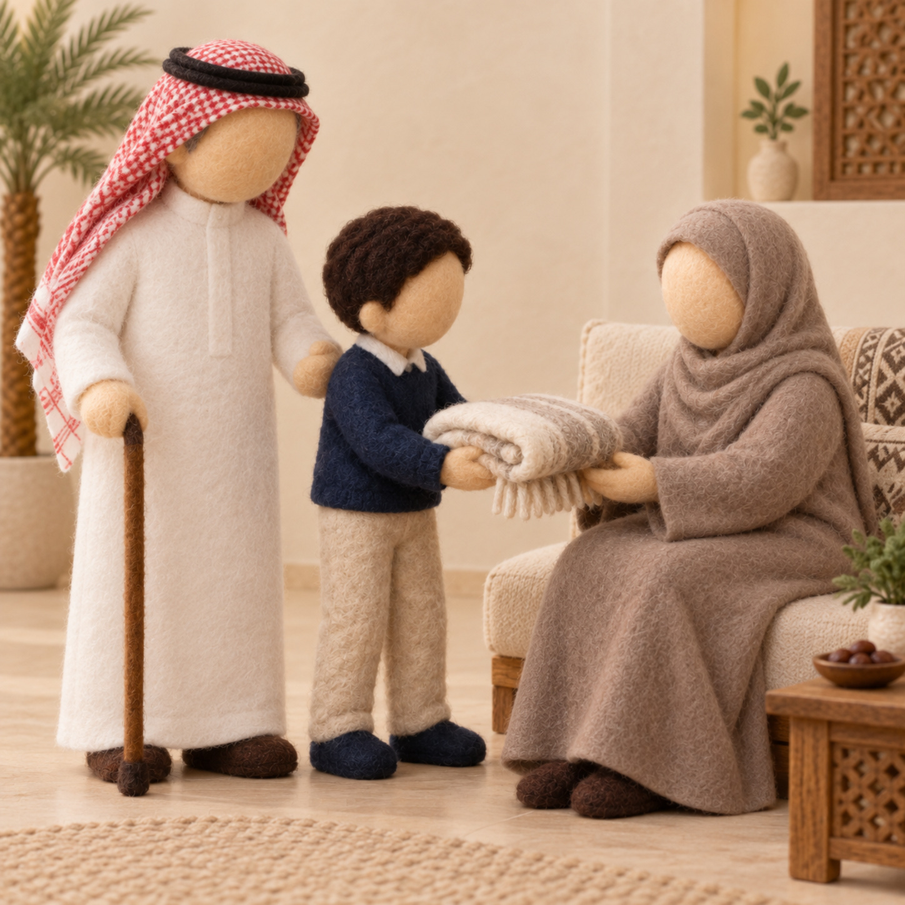
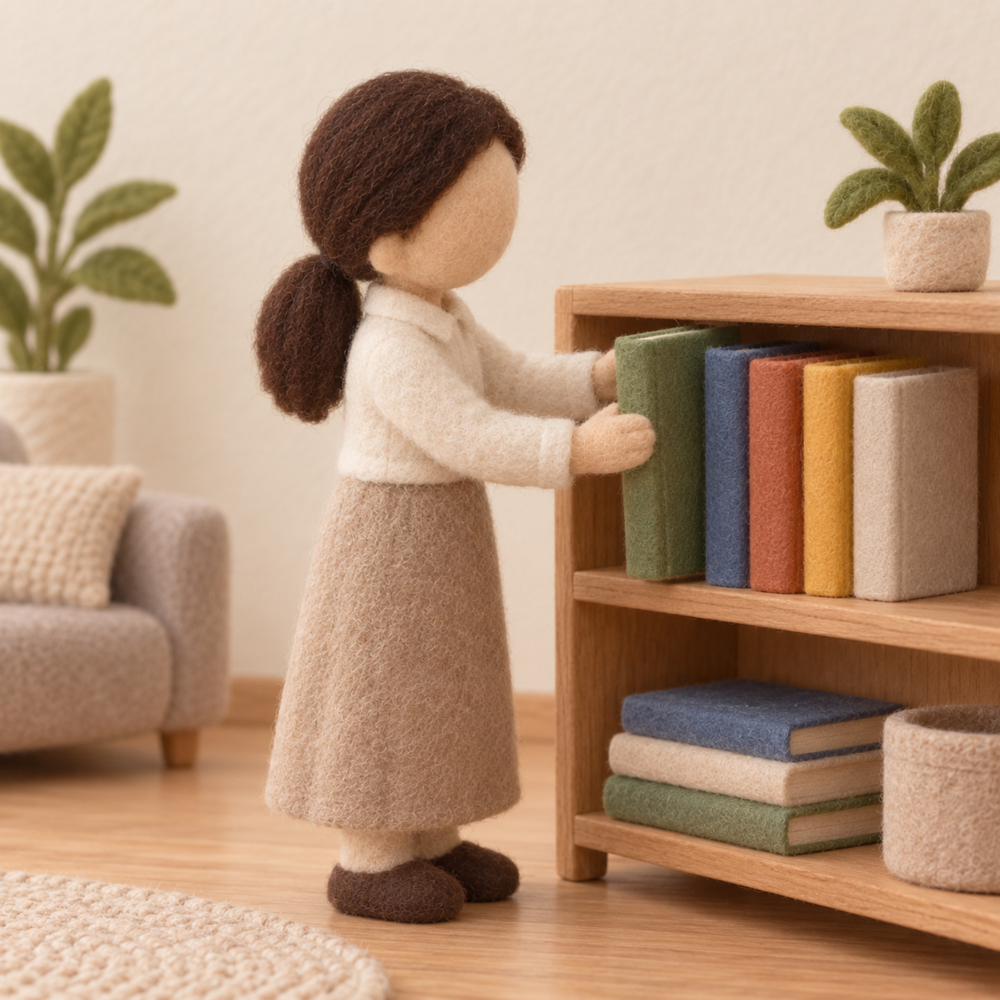
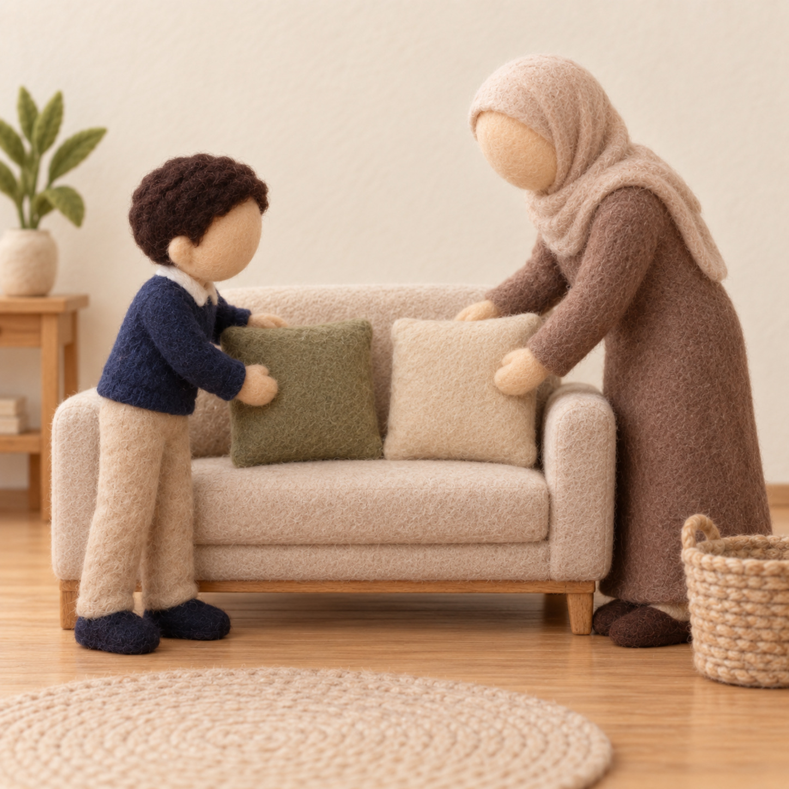

للطباعة: اضغطي Ctrl/⌘ + P ثم اختاري الحجم A4. ٤ أقسام لأركان اليوم الثالث. أعمار ٥–٦: تلوينٌ وقصٌّ ولصقٌ واختيار — بلا كتابة. اليومُ الآخرُ يُذكَر شفهيًّا بلا تجسيد.
يومي الصالحُ في بيتي
الليل والنهار · اليوم الثالث — ركن المسكن · بطاقاتُ أدوارٍ للأعمال الصالحة (دُمى بلا ملامح)

طريقة العمل: تُقصّ بطاقاتُ الأدوار وتُوزَّع، ويمثّل الأطفال بالدُّمى الخشبية بلا ملامح أعمالًا يحبها الله في النهار؛ نذكّرُ شفهيًّا بنعمة الصباح وباليوم الآخر جزاءً — تذكيرًا لا تجسيدًا، صيانةً لهيبة الغيب.
بطاقاتُ الأعمال الصالحة — تُقصّ وتُوزَّع للأدوار

صورة: برّ الوالدينبرُّ والديّ

صورة: الترتيبأرتّبُ بيتي
بطاقةُ ذكر الصباح — تُقصّ وتُقرأ بالصورة
«ما أصبح بي مِن نعمةٍ فمِنك وحدَك»
أشكرُ اللهَ صباحًا على كلِّ نعمة — تُقرأ بالصورة، بلا كتابة للطفل
أرتّبُ أعمالَ يومي الصالحة
الليل والنهار · اليوم الثالث — ركن أدرك وأستمتع · ترتيبٌ ومطابقة (يحبها الله)
طريقة العمل: تُقصّ بطاقاتُ الأعمال، ويرتّبها الطفل ويطابق كلَّ عملٍ بوقته من النهار، ويتحدّث عن أنّ اللهَ يحبّ العملَ الصالح ويجزي عليه في اليوم الآخر (تذكيرًا لا تجسيدًا).
بطاقاتُ الأعمال — تُقصّ وتُرتَّب
 صورة: ماء
صورة: ماءأُقدّمُ الماء

صورة: المساعدةأُساعدُ غيري
صورة: الترتيب
أرتّبُ ألعابي
قصصُ الشاكرين والعاملين
الليل والنهار · اليوم الثالث — ركن المكتبة · بطاقاتُ قصصٍ وفاصلُ كتاب (شكرُ النعمة)
طريقة العمل: تُعرَضُ الكتبُ المصوّرة، وتُقصّ بطاقاتُ القصص وفاصلُ الكتاب ليلوّنه الطفل ويستخدمه؛ نحاورُ بالصور عن شكر النعمة وحبّ العمل الصالح والتوبةِ عند التفريط — بلا تجسيدٍ للغيب.
١) بطاقاتُ القصة — تُقصّ ويُحكى بها
٢) فاصلُ الكتاب — ألوّنه وقُصّه
☀ نهاري عملٌ وشكر 🌙
فاصلُ كتابٍ يلوّنه الطفل ويقصّه — بلا كتابة
لوحةُ أعمالي الصالحة
الليل والنهار · اليوم الثالث — ركن فنوني الجميلة · اختيارٌ وتلوينٌ ولصق (اللهُ يرى ويحب)
طريقة العمل: يختار الطفل بطاقةَ عملٍ صالحٍ ينوي عمله نهارًا، يلوّنها ويلصقها في لوحة الإحسان الجماعية؛ نتحدّث بالصورة — بلا كتابة. اللهُ يراني ويحبّ عملي ويجزيني (تذكيرًا لا تجسيدًا).
أختارُ عملًا وألوّنه
صورة: الترتيب
أرتّبُ ألعابي
صورة: ماء أُقدّمُ الماء
المعنى المركزي المتكامل لليوم: نهاري وقتُ عملٍ صالحٍ يحبه الله، وأشكرُ نعمةَ الصباح؛ واليومُ الآخرُ حقٌّ أُجزى فيه — أستعدُّ له بالعمل. — للمعلمة: اليومُ الآخرُ والجزاءُ يُغرَسان تذكيرًا لا تجسيدًا، صيانةً لهيبة الغيب.